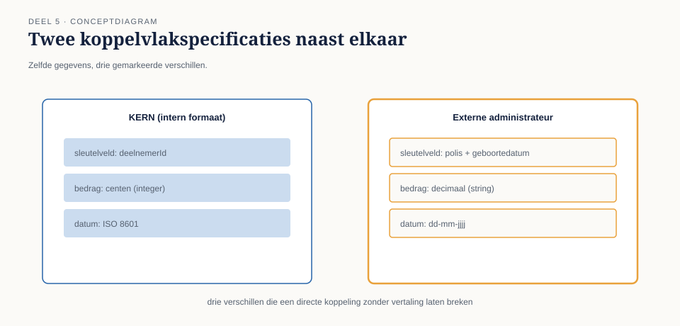
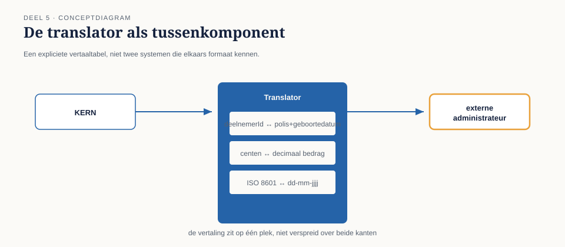
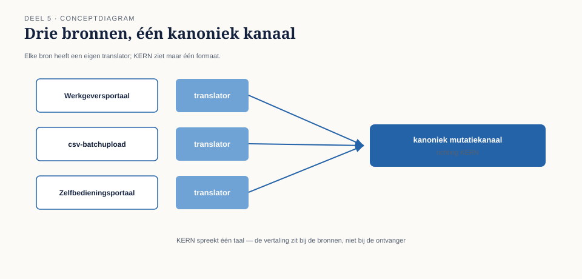

Met router en filter op hun plaats leek het mutatielandschap bij Meridiaan eindelijk stabiel. Tot de externe pensioenadministrateur — de partij die de validatie van salariscorrecties uitvoert — een eigen koppelvlak bleek te hanteren dat niets leek op het interne formaat van KERN. Waar KERN een deelnemer aanduidt met een intern deelnemersnummer ("deelnemerId": "00482"), verwacht de administrateur een samengesteld sleutelveld van polisnummer plus geboortedatum ("polis": "NL-88213", "geboortedatum": "1978-04-12"). Waar KERN bedragen als geheel getal in centen doorgeeft, verwacht de administrateur een decimaal bedrag met twee cijfers achter de komma.
7secties
3figuren
12controlevragen
1kernzinnen
Niveau 1: ① Van synchroon naar asynchroon: waarom messaging → ② Messagingfundamenten: kanaal, bericht, endpoint → ③ Message Construction: command, event, document en request-reply → ④ Basisrouting: content-based router en message filter → ⑤ Basistransformatie: translator, envelope wrapper, normalizer (hier) → ⑥ Point-to-point vs. publish-subscribe kanalen, verdiept → ⑦ Betrouwbaarheid I: garanties en idempotentie → ⑧ Betrouwbaarheid II: volgorde en guaranteed delivery → ⑨ Foutafhandeling basis: dead letter channel en invalid message channel → ⑩ Examentraining en capstone: de verdediging
5.0 Twee systemen, twee talen, één deelnemersnummer
Sectie 1 van 7
Met router en filter op hun plaats leek het mutatielandschap bij Meridiaan eindelijk stabiel. Tot de externe pensioenadministrateur — de partij die de validatie van salariscorrecties uitvoert — een eigen koppelvlak bleek te hanteren dat niets leek op het interne formaat van KERN. Waar KERN een deelnemer aanduidt met een intern deelnemersnummer ("deelnemerId": "00482"), verwacht de administrateur een samengesteld sleutelveld van polisnummer plus geboortedatum ("polis": "NL-88213", "geboortedatum": "1978-04-12"). Waar KERN bedragen als geheel getal in centen doorgeeft, verwacht de administrateur een decimaal bedrag met twee cijfers achter de komma.
Caspars eerste reflex was voorstelbaar: pas de code in KERN aan zodat die berichten in het formaat van de administrateur aanmaakt. Het probleem daarmee werd zichtbaar zodra een tweede externe partij, de toekomstige koppeling met een tweede pensioenadministrateur voor een deelfusie, hetzelfde traject moest doorlopen — met wéér een ander formaat. KERN zou dan voor elke externe partij zijn eigen uitvoerformaat moeten kennen, wat de kernapplicatie onnodig laat groeien met kennis die niets met pensioenverwerking te maken heeft, alleen met de eigenaardigheden van externe koppelvlakken.
Dit deel behandelt drie patronen die dit voorkomen: de translator, die een bericht van het ene formaat naar het andere omzet; de envelope wrapper, die metadata rond een bericht toevoegt of verwijdert zonder de inhoud te raken; en de normalizer, die meerdere binnenkomende varianten samenbrengt tot één interne kanonieke vorm.

Figuur 5-1 — twee koppelvlakspecificaties naast elkaar: het interne KERN-formaat en het externe administrateur-formaat, met gemarkeerde verschillen in sleutelveld, bedragrepresentatie en datumnotatie
02
5.1 De translator
Sectie 2 van 7
Een translator (ook wel message translator) zet een bericht van het ene formaat om naar het andere, zonder de betekenis te veranderen. Het cruciale ontwerpprincipe is waar deze vertaling wordt geplaatst: niet in KERN, en niet bij de externe administrateur, maar in een aparte, tussenliggende component die aan beide kanten van het kanaal precies één formaat kent.
Dit lijkt een subtiel verschil met "KERN past zijn uitvoer aan", maar het gevolg is groot. Met een aparte translator blijft KERN uitsluitend het interne formaat spreken — naar elk kanaal, altijd. De translator, en niet KERN, draagt de kennis over wat de externe administrateur specifiek verwacht. Komt er een derde externe partij bij met een derde formaat? Dan komt er een derde translator, en KERN verandert niet.
Kernzin 5 van de cursus: elk systeem hoort precies één taal te spreken — de zijne. Vertalen is het werk van de grens, niet van het systeem zelf.
Een translator moet, om houdbaar te blijven, aan twee eisen voldoen:
Hij vertaalt structuur en representatie, niet betekenis. Een deelnemersnummer omzetten naar een polisnummer-plus-geboortedatum-sleutel is vertalen, mits de onderliggende identiteit van de deelnemer hetzelfde blijft. Zodra een translator inhoudelijke beslissingen begint te nemen — bijvoorbeeld: "als het bedrag boven €5.000 is, stuur een ander veld mee" — is hij niet langer een translator maar een stuk verborgen bedrijfslogica die eigenlijk in de applicatie thuishoort, of een filter (deel 4).
Hij is in twee richtingen consistent, ook als hij maar in één richting wordt gebruikt. Ook wanneer alleen berichten van KERN náár de administrateur worden vertaald, is het waardevol om vast te leggen hoe de vertaling in omgekeerde richting zou lopen — dat dwingt af dat de vertaling geen informatie stilzwijgend laat vallen. Bij Meridiaan bleek deze discipline waardevol toen de administrateur van foutmeldingen een antwoordbericht terugstuurde: omdat de vertaalregels al in kaart waren gebracht, kon de terugvertaling zonder gissen worden gebouwd.

Figuur 5-2 — de translator als tussenkomponent tussen KERN (intern formaat) en de externe administrateur (extern formaat), met een expliciete vertaaltabel: deelnemerId ↔ polis+geboortedatum, centen ↔ decimaal bedrag
Controlevraag — Opdracht 5.1 — Waarom niet in KERN?
Uit Werkboek deel 5, Opdracht 5.1 — Waarom niet in KERN?
Caspars eerste reflex was: pas KERN aan zodat het rechtstreeks het externe administrateurformaat aanmaakt. Leg uit, met een concreet toekomstscenario, waarom dit binnen een jaar een probleem wordt.
→Uitwerking tonenToon
Zodra een tweede externe partij met een ander formaat wordt aangesloten (zoals in 5.0 de tweede pensioenadministrateur bij de deelfusie), zou KERN twee verschillende uitvoerformaten moeten kennen — en bij een derde partij drie, enzovoort. KERN groeit dan met kennis die niets met pensioenverwerking te maken heeft, alleen met de eigenaardigheden van externe koppelvlakken. Bovendien: wijzigt één externe partij zijn formaat (zoals de administrateur later met het versienummer deed, zie 5.2), dan moet KERN zelf worden aangepast en opnieuw getest — met risico op regressie in de kernverwerking, voor een wijziging die inhoudelijk niets met die verwerking te maken had.
Wat je hier moet meenemen: het probleem is niet zichtbaar bij de eerste externe koppeling. Het wordt pas zichtbaar — en dan meteen duur — bij de tweede.
03
5.2 De envelope wrapper
Sectie 3 van 7
Niet elk verschil tussen formaten zit in de inhoud. Soms verschilt alleen wat er omheen staat: headers, ondertekening, versie-informatie, transportmetadata die een extern koppelvlak vereist maar die voor de eigenlijke boodschap niet relevant is.
Een envelope wrapper voegt zo'n omhulsel toe (of verwijdert het) zonder de kerninhoud aan te raken. Het verschil met een translator is precies dit: een translator verandert de inhoud zelf, een envelope wrapper verandert alleen wat eromheen zit.
Bij de koppeling met de externe administrateur bleek dit onderscheid praktisch waardevol. De administrateur vereiste dat elk bericht werd verpakt in een SOAP-envelope met een digitale ondertekening en een verplicht versienummer van het koppelvlak — niets daarvan raakte de inhoud van de mutatie zelf. Door dit als aparte envelope wrapper te bouwen, ná de translator, kon de vertaling van de inhoud (5.1) onveranderd blijven werken, zelfs toen de administrateur een half jaar later het versienummer van de envelope wijzigde zonder de inhoudelijke specificatie aan te passen. Was de envelogica vermengd met de vertaallogica geweest, dan had die wijziging een onnodig risico op regressie in de inhoudsvertaling met zich meegebracht.
Vuistregel: als een wijziging alleen "de buitenkant" raakt, hoort hij in de envelope wrapper; raakt hij de betekenis van een veld, dan hoort hij in de translator.
Controlevraag — Opdracht 5.2 — Translator of envelope wrapper?
Uit Werkboek deel 5, Opdracht 5.2 — Translator of envelope wrapper?
Bepaal voor elke wijziging of hij in de translator of in de envelope wrapper hoort.
De administrateur wijzigt het versienummer van het koppelvlak in de SOAP-header.
De administrateur besluit bedragen voortaan in hele centen te ontvangen in plaats van decimale euro's.
De administrateur voegt een verplicht digitaal ondertekeningsveld toe aan elk bericht.
De administrateur hernoemt het veld polis naar polisnummer.
→Uitwerking tonenToon
a. Envelope wrapper. Raakt alleen metadata rond het bericht, niet de inhoud.
b. Translator. Raakt de representatie van een inhoudelijk veld (bedrag).
c. Envelope wrapper. Een ondertekening zegt iets over het bericht als geheel (transportintegriteit), niet over de betekenis van een specifiek inhoudsveld.
d. Translator. Een veldnaam is onderdeel van de inhoudelijke structuur die vertaald wordt.
Wat je hier moet meenemen: de vuistregel uit 5.2 in de reader — raakt het de buitenkant, envelope wrapper; raakt het de betekenis van een veld, translator — is bij a en c eenduidig, maar bij b en d vereist het even nadenken omdat het "maar een klein wijzigingetje" lijkt. De omvang van een wijziging zegt niets over welk patroon hem hoort op te vangen.
04
5.3 De normalizer
Sectie 4 van 7
Waar translator en envelope wrapper werken met precies twee formaten (intern en één extern), lost een normalizer een ander probleem op: meerdere, verschillende binnenkomende varianten samenbrengen tot één interne, kanonieke vorm.
Dit patroon werd relevant toen bleek dat het Werkgeversportaal niet de enige bron van mutaties was. Een aantal grote werkgevers levert mutaties nog altijd aan via een oudere batchupload in csv-formaat, en een derde bron — een zelfbedieningsportaal voor kleinere werkgevers dat later dat jaar werd gelanceerd — leverde weer een eigen JSON-variant. Drie invoervormen, één interne verwerking in KERN.
Een normalizer lost dit op door vóór elke bron een eigen, bronspecifieke translator te plaatsen (csv → intern formaat, portaal-JSON → intern formaat, Werkgeversportaal-formaat → intern formaat, wat hier toevallig al gelijk was), die allemaal uitmonden op hetzelfde interne mutatiekanaal. Vanaf dat kanaal ziet KERN nooit meer dan één formaat, ongeacht welke van de drie bronnen het bericht oorspronkelijk aanleverde.
Het onderscheid met "gewoon drie keer een translator bouwen" is conceptueel: een normalizer is het patroon dat expliciet maakt dat er meerdere bronnen naar één kanonieke vorm convergeren, terwijl een translator (5.1) doorgaans één bron en één bestemming veronderstelt. In de praktijk is een normalizer dan ook vaak letterlijk een verzameling translators die op hetzelfde uitgaande kanaal uitkomen — het is geen ander bouwwerk, maar wel een andere manier om ernaar te kijken, met een eigen implicatie: bij een normalizer moet je expliciet vastleggen wat de kanonieke vorm ís, onafhankelijk van welke bron toevallig het eerst werd aangesloten. Doe je dat niet, dan wordt de kanonieke vorm stilzwijgend "wat de eerste bron toevallig aanlevert" — met alle problemen van dien zodra die eerste bron zelf verandert.

Figuur 5-3 — drie invoerbronnen (Werkgeversportaal, csv-batchupload, zelfbedieningsportaal) elk met een eigen translator, uitmondend op één gedeeld, kanoniek mutatiekanaal richting KERN
Uit Werkboek deel 5, Opdracht 5.3 — Normalizer ontwerpen
Meridiaan krijgt mutaties binnen via drie bronnen: het Werkgeversportaal (JSON, intern formaat), een csv-batchupload van grote werkgevers, en een nieuw zelfbedieningsportaal (eigen JSON-variant).
Waarom is dit een normalizer-vraagstuk en niet slechts drie keer hetzelfde translator-patroon toepassen?
Wat moet je expliciet vastleggen voordat je de drie bronspecifieke translators bouwt?
Wat gaat er mis als je dat niet vastlegt en gewoon begint met de translator voor het Werkgeversportaal?
→Uitwerking tonenToon
a. Het is in essentie wél drie keer een translator (zie 5.3 in de reader: "vaak letterlijk een verzameling translators die op hetzelfde uitgaande kanaal uitkomen"), maar het normalizer-perspectief voegt iets toe: het maakt expliciet dat er een gedeelde, kanonieke bestemmingsvorm bestaat waar alle drie de bronnen naartoe moeten convergeren — dat is iets anders dan drie onafhankelijke, los van elkaar ontworpen vertalingen.
b. De kanonieke interne vorm zelf: de definitieve structuur, veldnamen en representaties die KERN intern verwacht, onafhankelijk van welke bron toevallig het eerst is aangesloten.
c. Als je zonder die vastlegging begint met de Werkgeversportaal-translator, wordt "wat het Werkgeversportaal toevallig aanlevert" stilzwijgend de kanonieke vorm. Zodra de tweede bron (csv) wordt aangesloten, blijkt die kanonieke vorm dan bijvoorbeeld toevallig JSON-specifieke aannames te bevatten die niet bij csv passen, en moet de eerste translator alsnog worden herzien — precies het probleem dat expliciete vastlegging vooraf had voorkomen.
Discussiepunt: is "wat de eerste bron toevallig aanlevert" ooit een verdedigbare kanonieke vorm? Soms wel — als die eerste bron toevallig al goed doordacht is. Het probleem is niet dat de vorm daaruit voortkomt, maar dat de keuze niet bewust en expliciet is.
05
5.4 Drie patronen, drie verantwoordelijkheden
Sectie 5 van 7
De drie patronen van dit deel lossen aantoonbaar verschillende problemen op, en het is de moeite waard ze scherp naast elkaar te zetten:
Patroon
Probleem
Verandert de inhoud?
Translator
Eén bron, één bestemming, verschillend formaat
Ja
Envelope wrapper
Metadata rond het bericht wijkt af van de inhoud
Nee
Normalizer
Meerdere bronnen, één kanonieke bestemmingsvorm
Ja (per bron)
Alle drie delen hetzelfde onderliggende principe uit kernzin 5: elk systeem spreekt zijn eigen taal, en het transformeren daartussen is expliciet, herkenbaar werk — niet iets dat verstopt zit in de kernlogica van een applicatie die eigenlijk alleen over pensioenverwerking zou moeten gaan.
Controlevraag — Opdracht 5.4 — Betekenis versus representatie
Uit Werkboek deel 5, Opdracht 5.4 — Betekenis versus representatie
Een ontwikkelaar stelt voor om in de translator naar de externe administrateur ook meteen te controleren of het bedrag boven €5.000 is, en zo ja, een extra veld vereistGoedkeuring: true toe te voegen.
Is dit correct translator-werk volgens de eis uit 5.1 ("vertaalt structuur en representatie, niet betekenis")?
Waar hoort deze logica dan wel thuis?
→Uitwerking tonenToon
a. Nee. Dit is een inhoudelijke beslissing (is goedkeuring vereist), geen representatieverandering. De translator zou hiermee verborgen bedrijfslogica bevatten die niets met vertalen te maken heeft.
b. Dit is precies het werk van de message filter uit deel 4 (het €5.000-scenario) — de beslissing "vereist dit bericht goedkeuring" hoort vóór of los van de translator te worden genomen, niet erin verstopt. Als het externe koppelvlak het veld vereistGoedkeuring daadwerkelijk nodig heeft, kan de translator dat veld overnemen zodra het al eerder in de keten (bijvoorbeeld als header-veld) is vastgesteld — maar de translator berekent het niet zelf.
Wat je hier moet meenemen: dit is dezelfde valkuil als in deel 4 (vermenging van verantwoordelijkheden), nu in een ander patroon. Herken het patroon van de fout, niet alleen de fout zelf.
06
Samenvatting van deel 5
Sectie 6 van 7
Vertaalwerk hoort aan de grens tussen systemen, niet in de applicatie zelf — elk systeem spreekt precies één taal, de zijne.
Een translator zet inhoud om tussen twee formaten; hij vertaalt structuur en representatie, nooit betekenis, en blijft in twee richtingen consistent.
Een envelope wrapper voegt metadata toe of verwijdert die, zonder de kerninhoud te raken — gescheiden houden van de translator voorkomt onnodig regressierisico bij wijzigingen die alleen de buitenkant raken.
Een normalizer brengt meerdere binnenkomende varianten samen tot één interne, kanonieke vorm — vaak een verzameling translators die op één kanaal uitkomen, met als aparte eis dat de kanonieke vorm expliciet is vastgelegd.
Controlevraag — Opdracht 5.5 — Uit je eigen praktijk
Uit Werkboek deel 5, Opdracht 5.5 — Uit je eigen praktijk
Neem een koppeling uit je eigen werk waarbij twee systemen een verschillend formaat voor "hetzelfde" gegeven hanteren (bijvoorbeeld een andere sleutel, andere eenheden, andere datumnotatie). Ontwerp een translator, en beoordeel: is er ook een envelope-verschil, en zo ja, houd je dat gescheiden van de inhoudelijke vertaling?
→Uitwerking tonenToon
Er is geen modelantwoord; dit is een spiegelopdracht.
Veelvoorkomende observatie uit eerdere groepen: deelnemers ontdekken vaak dat hun bestaande vertaalcode envelope- en inhoudslogica door elkaar heeft lopen — bijvoorbeeld authenticatieheaders die in dezelfde functie worden gezet als veldvertalingen — precies de vermenging die paragraaf 5.2 wil voorkomen.
Zelftoets deel 5
Uit Werkboek deel 5, Zelftoets (letterlijk overgenomen)
1Wat is de kernzin van dit deel, in eigen woorden?Toon antwoord
Elk systeem hoort precies één taal te spreken — de zijne. Vertalen is het werk van de grens, niet van het systeem zelf.
2Wat is het verschil tussen een translator en een envelope wrapper?Toon antwoord
Een translator verandert de inhoud van het bericht (structuur, representatie); een envelope wrapper voegt metadata rond het bericht toe of verwijdert die, zonder de inhoud te raken.
3Noem de twee eisen waaraan een houdbare translator moet voldoen.Toon antwoord
Hij vertaalt structuur en representatie, nooit betekenis; hij is in twee richtingen consistent, ook als hij maar in één richting wordt gebruikt.
4Wat lost een normalizer op dat een enkele translator niet oplost?Toon antwoord
Een normalizer maakt expliciet dat meerdere, verschillende bronnen moeten convergeren naar één gedeelde kanonieke vorm — een los toegepaste translator veronderstelt doorgaans één bron en één bestemming.
5Wat moet je expliciet vastleggen voordat je een normalizer bouwt, en wat gaat er mis als je dat niet doet?Toon antwoord
De kanonieke interne vorm zelf, onafhankelijk van welke bron toevallig het eerst is aangesloten. Zonder die vastlegging wordt de kanonieke vorm stilzwijgend "wat de eerste bron toevallig aanlevert", met herzieningen tot gevolg zodra een volgende bron wordt aangesloten.
6Waarom is "bedrag boven €5.000 → extra veld toevoegen" geen translator-werk?Toon antwoord
Omdat het een inhoudelijke beslissing is (of goedkeuring vereist is), geen representatieverandering — dat hoort bij een filter of eerder in de keten, niet verstopt in de translator.
7Waarom werd het probleem van 5.0 pas zichtbaar bij de tweede externe partij, niet bij de eerste?Toon antwoord
Bij één externe partij was er nog geen sprake van hergebruik of van conflicterende eisen — het probleem (KERN groeit met externe-koppelvlakkennis) wordt pas zichtbaar zodra een tweede partij met een ander formaat wordt aangesloten en dezelfde aanpak zou moeten worden herhaald.
07
Vooruitblik
Sectie 7 van 7
Deel 6 verdiept het onderscheid tussen point-to-point en publish-subscribe kanalen dat in deel 2 is geïntroduceerd — met de vraag wat er verandert zodra niet één, maar meerdere onafhankelijke systemen op hetzelfde event moeten reageren, zoals bij de eerdere uitbreiding met het Nabestaandenloket.
Verder naar deel 6
Deel 6 — Point-to-point vs. publish-subscribe kanalen, verdiept — bouwt voort op wat hier is behandeld.